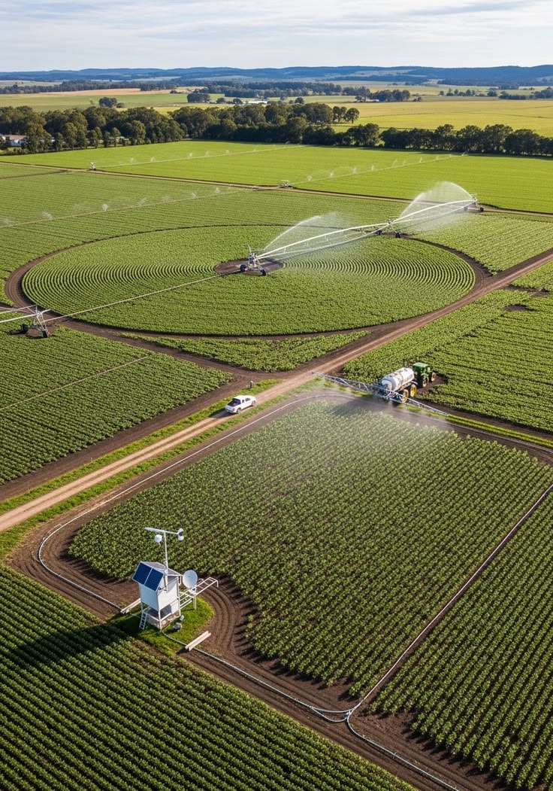
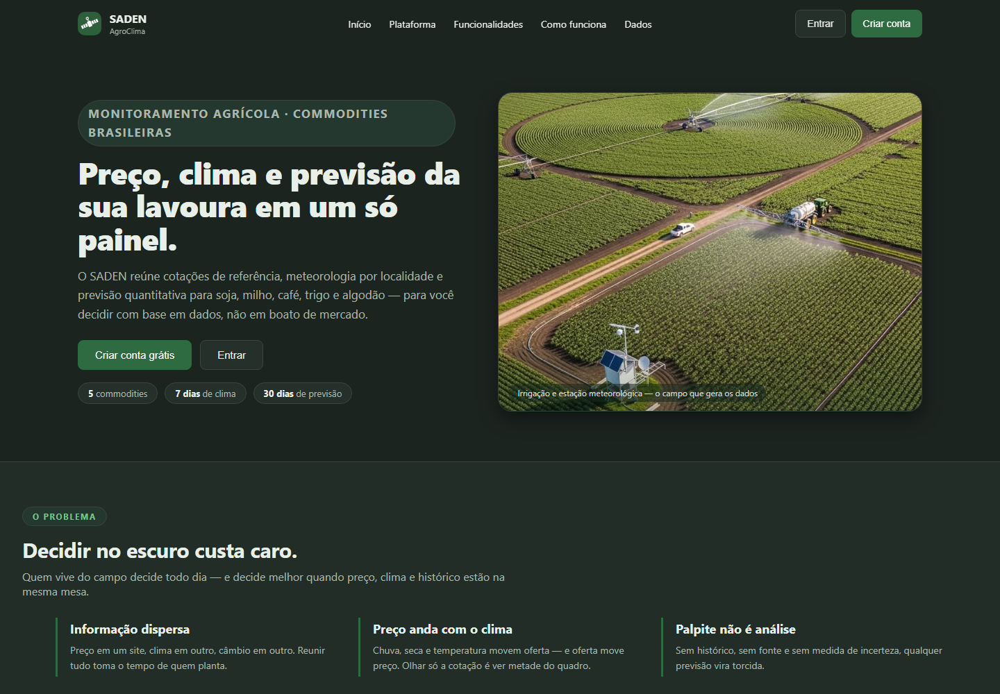

Informação dispersa
Cotação em um site, câmbio em outro, contexto regional em um terceiro. Reunir tudo consome o tempo de quem planta.
Agroclima · commodities brasileiras
O SADEN reúne cotações de referência de cinco commodities, conversão pelo câmbio oficial e contexto regional em um painel único — com alertas de preço avaliados por um serviço próprio, todos os dias úteis.

O problema
Quem trabalha com commodities agrícolas acompanha, ao mesmo tempo, cotação internacional, câmbio, calendário de safra e condições da própria região. Cada informação mora em um lugar diferente, com uma data diferente e um significado diferente.
Cotação em um site, câmbio em outro, contexto regional em um terceiro. Reunir tudo consome o tempo de quem planta.
Um número sem fonte, data e método não permite saber se está atualizado, se é referência internacional ou se já foi convertido.
Sistemas que prometem previsão infalível escondem a incerteza. O SADEN declara o que cada número é — e o que ele não é.
O SADEN é um projeto técnico que organiza essas camadas em um produto navegável: séries de preço com linhagem, alertas avaliados por um serviço independente e uma camada de transparência que explica a origem de cada dado.
A plataforma
A tela abaixo é a entrada real da aplicação na versão v1.2.3, capturada do sistema em execução. Nenhum dado de usuário aparece.

Séries de soja, milho, café, trigo e algodão, com data da observação, unidade e o estado de atualização de cada série.
Mapa do Brasil com recortes regionais para situar a leitura de mercado no território em que ela acontece.
Você define série, condição e limite. O serviço avalia sozinho, em dias úteis, e registra um evento quando a condição é atingida.
Histórico da série e projeção estatística de referência, exportáveis em CSV para análise própria.
Funcionalidades
Tudo abaixo está implementado e testado na v1.2.3. O que não está pronto não aparece nesta lista.
Contrato futuro do mercado internacional, convertido para real pela PTAX de venda. A origem, a data e a unidade acompanham o número.
Cada série informa se está atualizada, aguardando o fechamento do pregão, sem pregão esperado ou atrasada — em vez de exibir um número antigo como novo.
Um evento por observação. Se o worker reiniciar, o mesmo alerta não dispara duas vezes. Concorrência entre instâncias é controlada por lease.
A verificação roda em serviço separado do site, às 18h de Brasília, de segunda a sexta. Fim de semana não é tratado como falha.
Histórico e projeção de referência em CSV, com as ressalvas do modelo junto dos números.
Alertas e eventos são visíveis apenas para o próprio usuário. Rotas administrativas exigem autorização explícita.
Cópia diária do banco com verificação de integridade, manifesto e teste de restauração — não apenas "arquivo existe".
Quando a fonte ou o serviço de monitoramento cai, a interface mostra o estado real em vez de esconder o problema.
Dados e metodologia
A série é construída a partir de contratos futuros do mercado internacional (Yahoo Finance) e convertida para reais pela PTAX de venda do Banco Central. Quando o câmbio não é publicado em um dia, o sistema usa o último valor disponível e registra que houve fallback.
Isso é uma referência internacional convertida. Não é o preço físico recebido pelo produtor brasileiro: não inclui base local, prêmio portuário, frete, impostos nem custo de exportação.
A leitura regional usa recortes do território brasileiro para situar a informação. A documentação do projeto registra, para cada série, a fonte, a data de referência e o critério de frescor aplicado.
CEPEA e CONAB não estão integrados. Essas fontes não oferecem API pública validada para este projeto e não são apresentadas como ativas. Séries de preço físico regional ainda não existem no produto.
| Informação | Natureza | Limite declarado |
|---|---|---|
| Cotação da commodity | Referência internacional convertida por PTAX | Não é preço físico no porto ou na fazenda |
| Conversão cambial | PTAX de venda, com fallback registrado | Dia sem publicação usa o último valor |
| Projeção de preço | Modelo estatístico de referência | Não é garantia nem recomendação |
| Alerta | Notificação interna do próprio painel | Sem e-mail, SMS ou WhatsApp |
| Contexto territorial | Recorte regional para leitura | Não é laudo agronômico |
Tecnologia
O SADEN roda em um único servidor com Docker: aplicação web, serviço de monitoramento e serviço de backup. O banco é um arquivo SQLite — escolha deliberada para um produto de baixo volume, que dispensa cluster e reduz pontos de falha.
Node.js 22, API HTTP e interface servida pelo mesmo processo.
Processo separado, com lock, heartbeat e histórico de execuções.
Cópia consistente, criptografada e verificada por teste de restauração.
Transparência
A parte mais importante de um sistema de apoio à decisão é dizer onde ele termina. Estas são as fronteiras atuais, verificadas no código da versão v1.2.3.
Projeto
O SADEN nasceu de um trabalho técnico de análise de dados agrícolas e evoluiu para uma aplicação com alertas, monitoramento e rotina de recuperação. Esta página apresenta o estado atual — não um roadmap.